Data Science Lab Project
Movie Success
This site combines two work-station notebooks into one clean project report. It examines movie ratings, votes, runtime, budget, revenue, talent visibility, and predictive models for audience and financial success.

Executive Summary
Project findings
The strongest story across the project is that movie success is multidimensional. Ratings, votes, and revenue respond to different forces, so no single variable defines success by itself.
Ratings reward selectivity
Countries and genres with smaller, more selective film samples often rank higher by average rating, while large industries show more variation.
Votes measure visibility
Audience vote counts align more with popularity, release scale, and attention than with the same signals that drive high ratings.
Revenue is modelable
Box office revenue becomes much more predictable after log transformation, with ensemble models outperforming linear baselines.
Authors and responsibilities
Work Station 1
Descriptive Analysis
The descriptive notebook cleans and transforms the movie dataset, then answers six questions about ratings, genres, runtime, revenue, budget, and talent.
Q1
How do movie ratings vary across countries and industries?
Country values were cleaned, split, and grouped; ratings were converted to numeric values and filtered to countries with enough observations.
Average ratings differ by country. Smaller or more selective industries rank higher because only stronger, internationally visible films tend to appear in the dataset, while larger industries show wider variation.
Interpretation
The result should not be read as a simple ranking of national film quality. Smaller industries can appear near the top because the dataset includes fewer films from those countries, and those films are often the strongest or most internationally visible titles.
Larger industries, especially the United States, contain prestige films and mass-market productions at the same time. That wider mix creates more variation and lowers the average compared with smaller, more selective country groups.
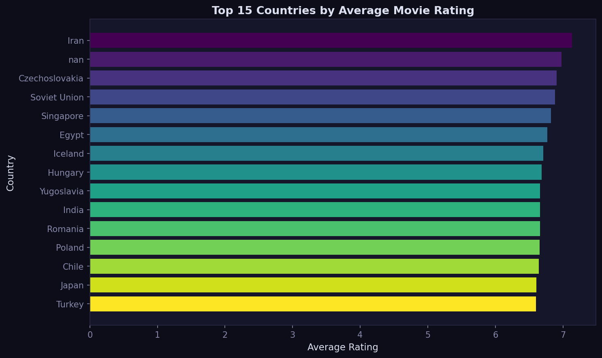
Q2
Which genres receive the highest ratings and most votes?
Genre values were parsed from list-like text and grouped to compare quality signals against audience engagement.
Ratings and votes tell different stories. Documentary, historical, and epic genres earn strong ratings, while action and franchise genres attract the largest vote counts.
Interpretation
A genre with high average ratings is not necessarily the genre with the largest audience. Some documentary and historical categories can be highly appreciated by viewers who choose them, but they do not always attract mass voting volume.
Action and franchise genres behave differently. They create large audiences, broad visibility, and many IMDb votes, even when their average rating is not the highest in the dataset.


Q3
How does movie duration influence audience ratings and votes?
Runtime was converted to minutes and compared against ratings and vote counts.
Most movies fall between 80 and 150 minutes. Within that range, ratings vary widely, so runtime alone does not predict whether a movie is highly rated.
Interpretation
Duration matters as context, but it is not a standalone success formula. The middle runtime range contains both weak and strong movies, meaning story, genre, production quality, and audience expectations matter more than length by itself.
Very short and very long films are more variable because they often represent specific formats or niche viewing experiences. Runtime should therefore be interpreted together with genre and release scale.


Q4
How do box office revenues differ across industries?
Revenue fields were converted from currency text to numeric values and grouped by primary genre.
$363M Action Epic average
$310M Superhero average
Kruskal-Wallis p < 0.001
Revenue is strongly genre-dependent. Action, superhero, animation, and franchise categories dominate because they combine large budgets, wide releases, and international appeal.
Interpretation
Revenue distributions are highly skewed because a small number of blockbuster films earn extremely large amounts. The average for a genre can therefore be pulled upward by franchise hits, especially in action-heavy categories.
The international revenue view is important because many high-grossing genres are designed for global markets. Domestic performance alone does not explain the scale of worldwide box office success.


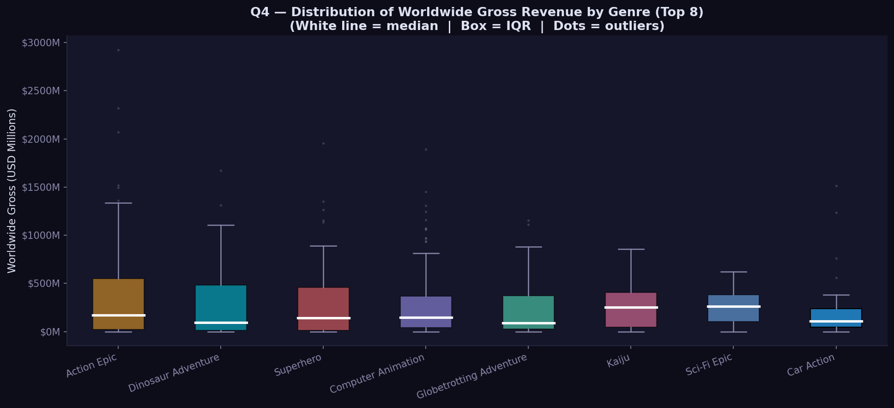
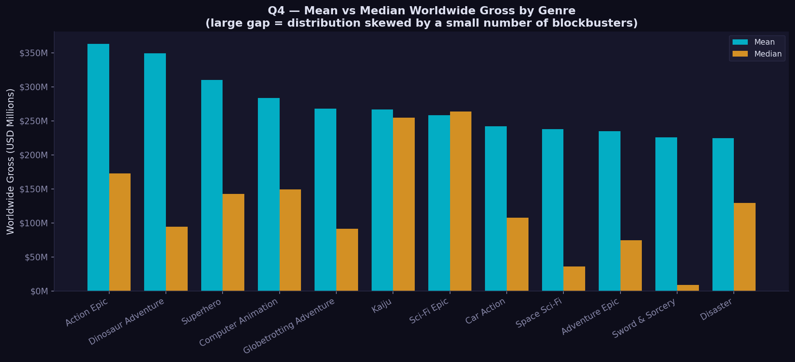
Q5
Is there a relationship between budget and box office performance?
Budget and worldwide gross were analyzed on a log scale, with ROI and profitability compared by budget tier.
Pearson r = 0.685
High-budget profitable: 65.3%
Low-budget median ROI: negative
Higher budgets are associated with higher worldwide gross, but ROI risk remains uneven. Low-budget films can produce extreme returns, yet many do not become profitable.
Interpretation
Budget helps explain box office scale because larger budgets often come with wider distribution, stronger marketing, and more production value. However, a high budget also raises the break-even point.
This is why revenue and profitability need to be interpreted separately. A film can earn a large worldwide gross and still be financially risky, while a smaller film can create high ROI if costs stay low.
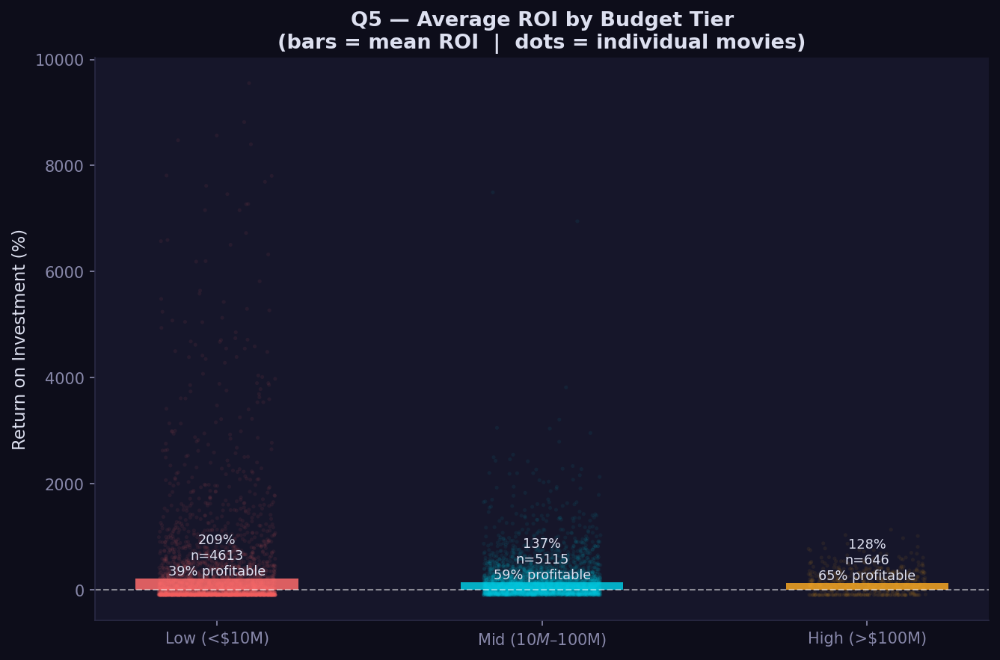
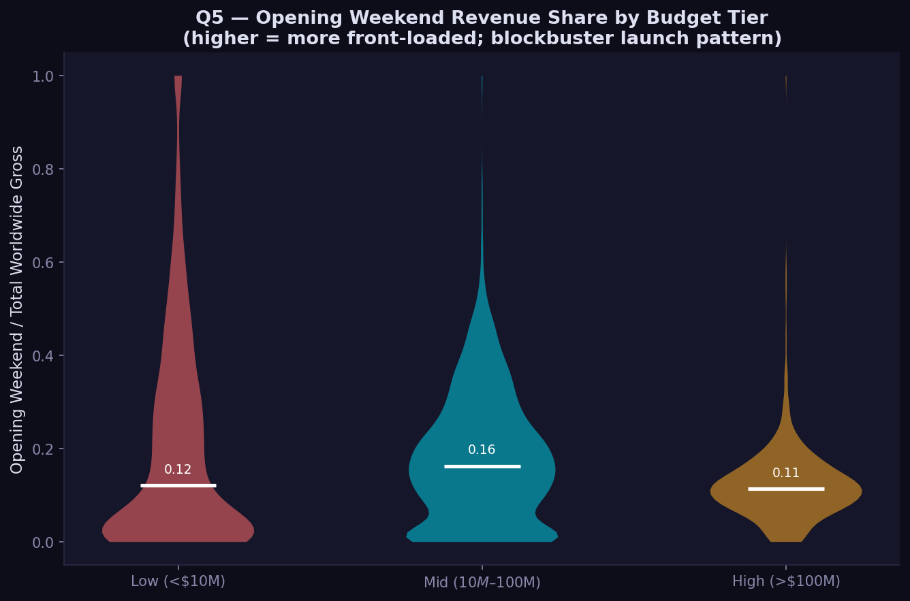

Q6
Do well-known directors, writers, or stars receive higher ratings or votes?
Talent profile was approximated through appearance counts, then compared across ratings and vote outcomes.
Median rating is 6.30 for both high-profile and low-profile talent groups across stars, directors, and writers. Star power appears to boost visibility more than quality evaluation.
Interpretation
Appearance frequency is a useful proxy for visibility, but it does not automatically measure artistic quality. The same median rating across high-profile and low-profile groups shows that famous personnel do not guarantee better audience evaluation.
The stronger effect appears in votes. Well-known people can help a movie attract attention, but the rating still depends on how audiences respond to the film itself.


Work Station 2
Machine Learning Analysis
The machine-learning notebook creates model-ready features, saves train-test splits, and compares regression and classification models across six prediction tasks.
Q1
Can movie rating be predicted from movie features?
Models used genre, duration, budget, log votes, release date, MPA rating, stars, and directors.
Best model: Gradient Boosting
R2 = 0.365
MAE = 0.641
Gradient Boosting performs best, but the model explains only about 37% of rating variation. Log votes are the dominant predictor, and subjective audience response remains difficult to capture from metadata alone.
Interpretation
The model can identify useful patterns, but ratings are subjective. Metadata can capture popularity, release timing, and broad genre effects, but it cannot fully measure story quality, cultural reception, or individual viewer taste.
Gradient Boosting improves on the linear baseline because rating is shaped by nonlinear interactions among features. Still, the moderate R2 shows that rating prediction has a natural ceiling with the available variables.
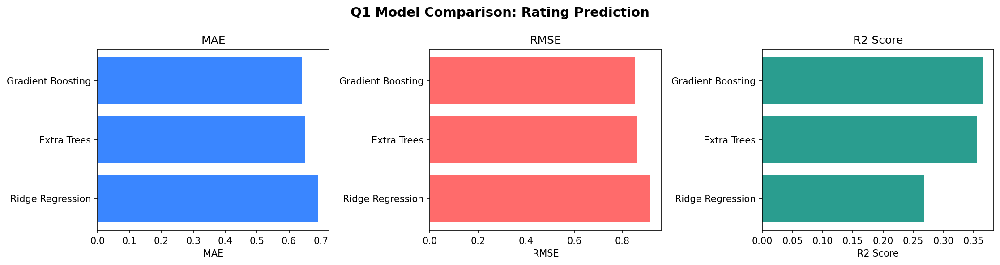
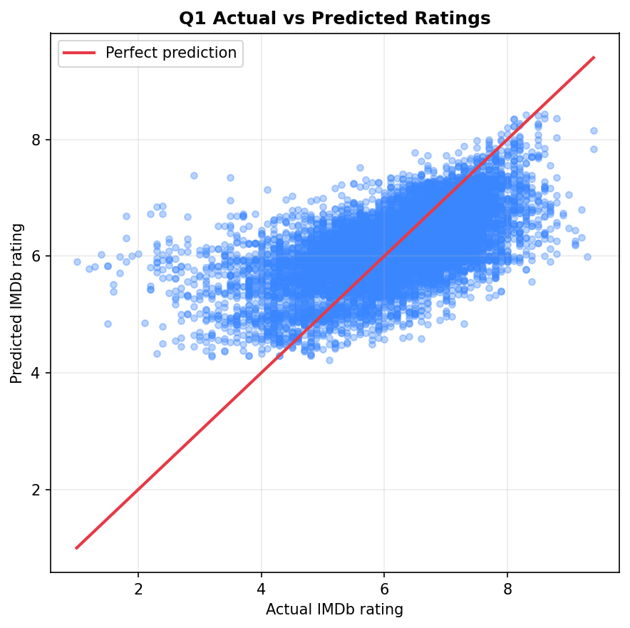
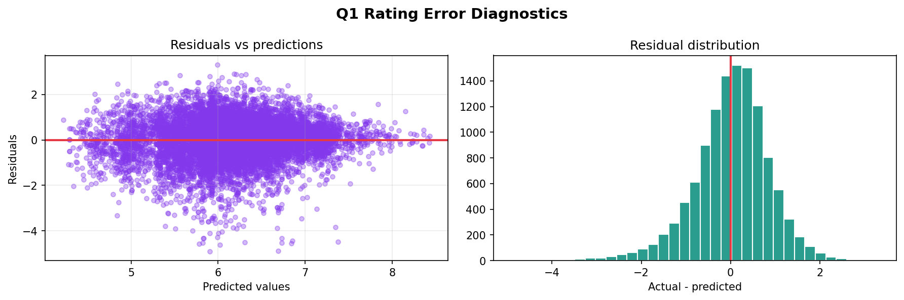
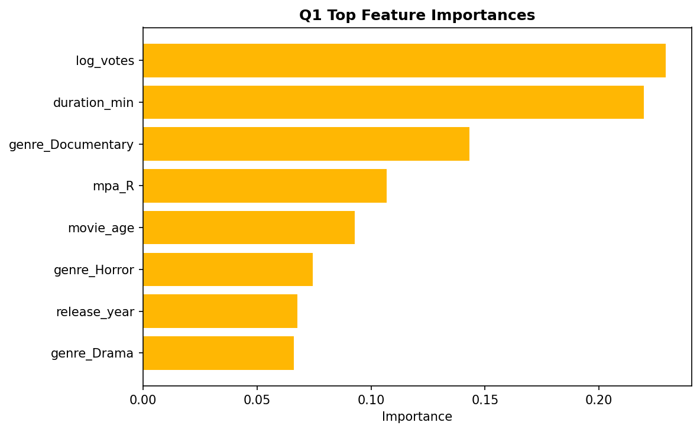
Q2
Can box office revenue be predicted from movie characteristics?
Worldwide gross was log-transformed to reduce blockbuster skew and stabilize model training.
Best model: Gradient Boosting
R2 = 0.645
Raw MAE about $21M
Revenue is far more predictable than rating. The log transform is critical because raw revenue overweights blockbuster extremes.
Interpretation
Revenue has clearer structural drivers than ratings. Budget, release scale, genre, and popularity signals connect more directly to box office outcomes than they do to subjective audience evaluation.
The log transformation is central to the result. Without it, models focus too heavily on the largest blockbusters and perform worse for ordinary films. On the transformed scale, the model learns broader revenue patterns.
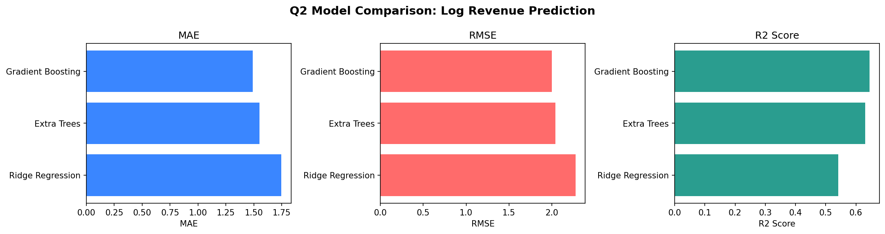
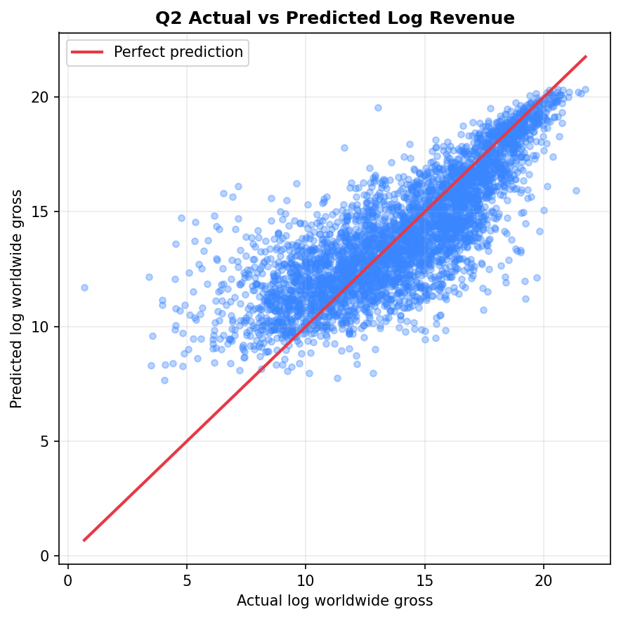
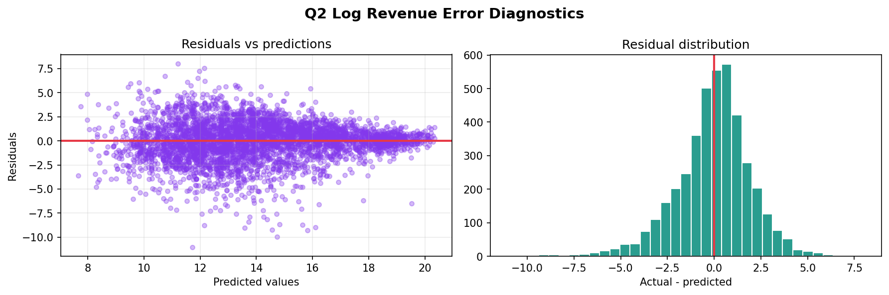
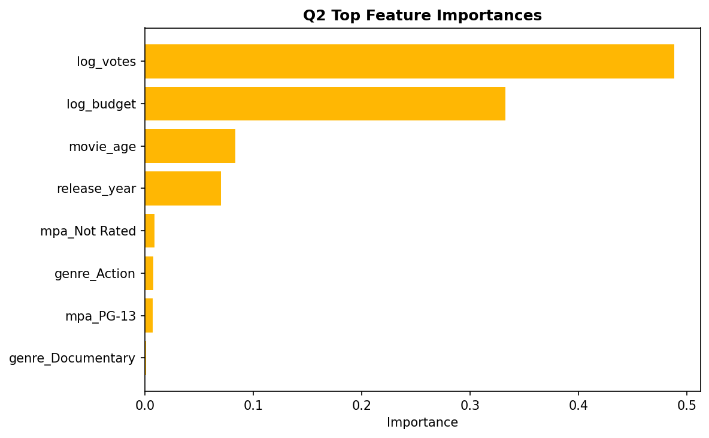
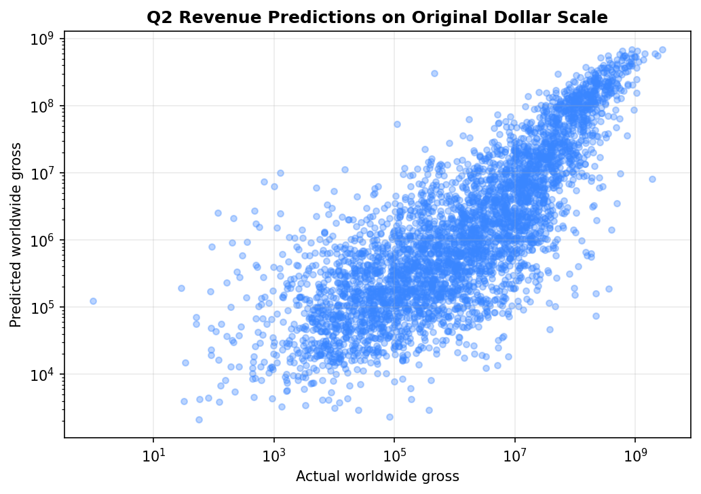
Q3
Can we predict whether a movie will receive a high rating?
The target is binary: high-rated versus not high-rated. Ambiguous middle ratings were removed and thresholds were tuned.
Best model: Random Forest
ROC AUC = 0.873
Accuracy = 86.3%
Random Forest performs best. Balanced training and threshold tuning improve the classifier over naive default settings.
Interpretation
This task works better than exact rating prediction because it asks a simpler question: whether a movie belongs to a high-rating group. Removing ambiguous middle ratings makes the target cleaner.
Balancing the training data and tuning thresholds matter because high-rated movies are not evenly distributed. The Random Forest model handles feature interactions well and gives the strongest ROC AUC.
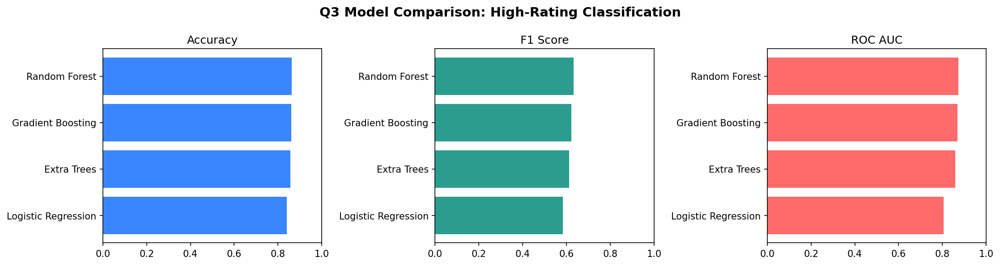
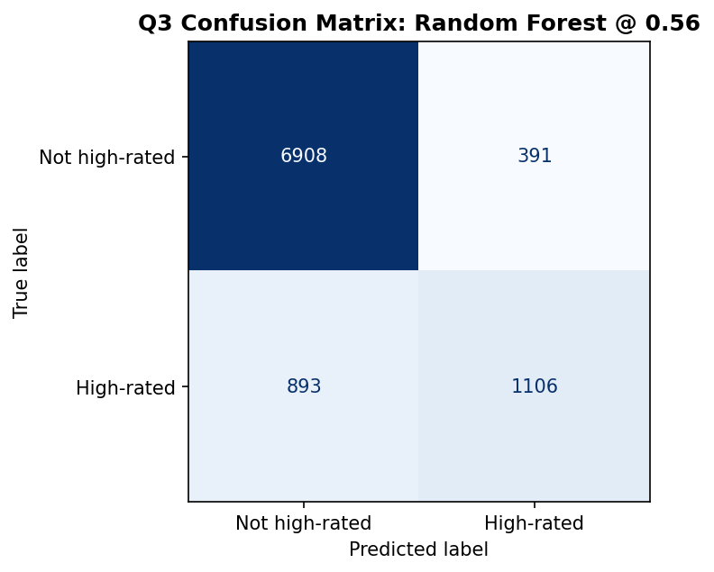
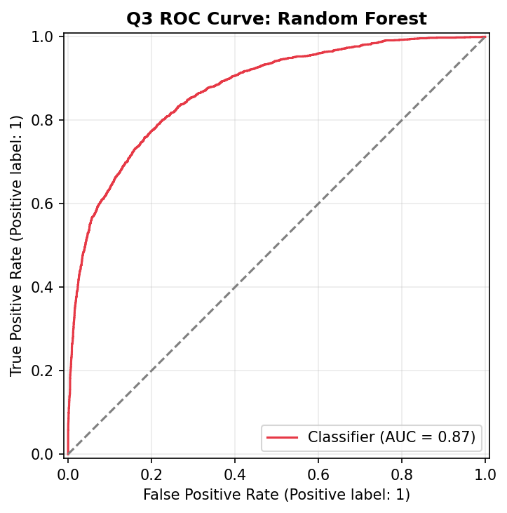
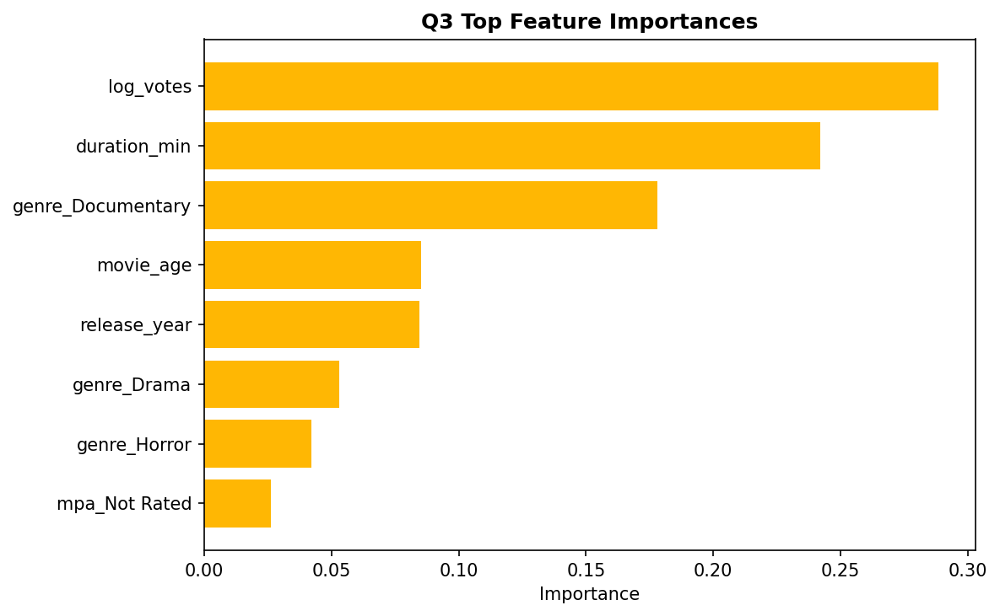
Q4
Can the number of audience votes be predicted?
Vote counts were modeled on transformed scales to reduce skew and outlier dominance.
Best model: Decision Tree after log transform
R2 = 0.432
Top signals: rating and release year
Log transformation sharply improves the model. Viral attention and marketing effects are still outside the available dataset.
Interpretation
Audience votes behave like a popularity measure, and popularity is heavily skewed. A few films receive enormous attention, while most films receive far fewer votes.
The transformed model performs better because it reduces the dominance of extreme viral or blockbuster cases. Even so, missing variables such as marketing spend, platform visibility, and social media attention limit prediction accuracy.
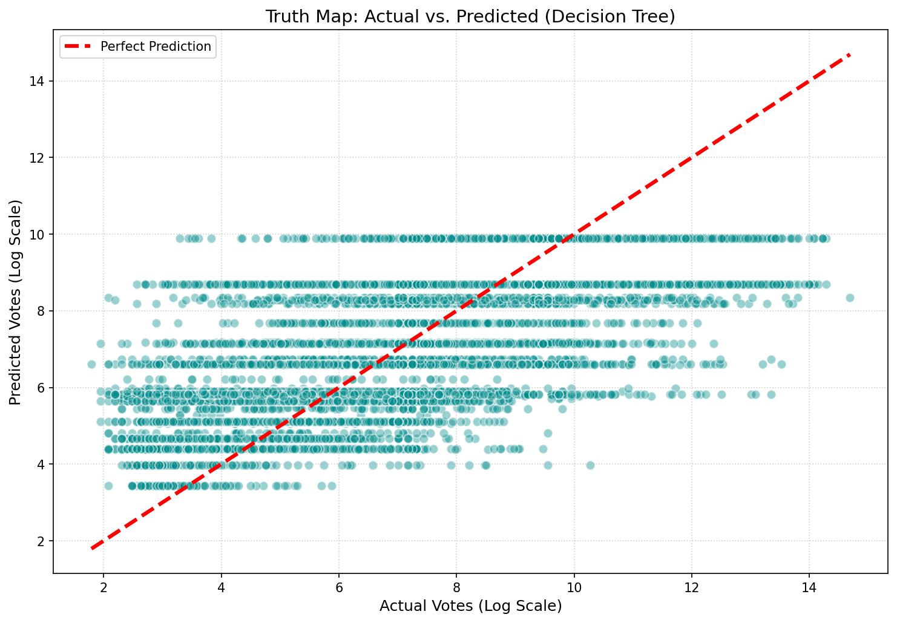

Q5
How does release timing influence box office performance?
Release date was parsed into year, month, and season; season was tested alongside budget, runtime, crew counts, and genre.
Votes R2 = 0.606
Gross R2 = 0.484
Season matters less than budget and year
Random Forest predicts audience votes best, while Decision Tree performs best for worldwide gross. Budget and release year matter more than season alone.
Interpretation
Release timing has signal, but it does not act alone. Season can influence audience behavior, yet budget, release year, crew size, runtime, and genre provide stronger information for prediction.
This means timing should be interpreted as part of a broader release strategy. A good season cannot compensate by itself for weak scale, weak visibility, or limited audience demand.
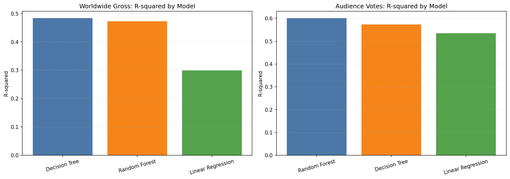
Q6
Can movies be classified as successful versus less successful?
A movie is labeled successful if it satisfies at least two of three conditions: above-median rating, above-median votes, and positive ROI.
Best model: Random Forest
Accuracy = 70.0%
ROC AUC = 0.767
The model captures real patterns, but success cannot be fully predicted without marketing, distribution, and streaming data.
Interpretation
The success label combines audience evaluation, audience attention, and financial return. This makes it more realistic than using only one metric, but it also makes the classification problem harder.
Random Forest performs best because success depends on interactions among budget, year, genre, runtime, and people-related features. The remaining uncertainty reflects missing real-world drivers such as marketing, distribution, reviews, and streaming availability.

Project Files
Data and generated outputs
Primary data, train-test splits, and generated modeling datasets are organized under the `Data` folder. Visual assets used by the website are under `assets/figures`.
| File | Rows | Purpose |
|---|---|---|
| Data/final_dataset.csv | 63,379 | Cleaned movie dataset used across both notebooks. |
| Data/train_Q1.csv / test_Q1.csv | 47,344 / 11,837 | Rating prediction train-test split. |
| Data/train_Q2.csv / test_Q2.csv | 16,577 / 4,145 | Revenue prediction train-test split. |
| Data/train_Q3.csv / test_Q3.csv | 37,191 / 9,298 | High-rating classification train-test split. |
| Data/model_splits/X_train.csv | 47,344 | Additional saved feature split moved out of the root folder. |
| Data/derived/q4_genre_revenue_dataset.csv | Generated | Derived genre and revenue analysis dataset. |
| Data/derived/q5_budget_performance_dataset.csv | Generated | Derived budget and box-office performance dataset. |
| Data/derived/q6_talent_impact_dataset.csv | Generated | Derived talent-profile dataset. |
Source Work
Notebooks and reports
The two original work-station notebooks remain in the repository root. The restored main workstation and conclusion are also available, and the report summaries are stored in `reports` using their section names.
Main Work Station For All
Overall project purpose, methodology, responsibilities, and combined discussion.
Descriptive analysis notebook
Full cleaning, transformation, visual analysis, and interpretation.
Machine learning notebook
Feature engineering, train-test splits, model training, and evaluation.
Descriptive Analysis
Quarto summary of the descriptive work.
Machine Learning Analysis
Quarto summary of the modeling work.
Conclusion
Final project conclusion, limitations, and future work.